Under this page, you can find Vouchers, Seals, card and joker Enhancements to help you level up your game!
Vouchers are shop tickets and only one can appear per ante, and once bought, one won't be in
the shop until the boss blind is defeated. They are arranged as their base form and then the
upgraded form after. Here are the vouchers: Overstock, Overstock Plus, Clearance Sale, Liquidation,
Hone, Glow Up, Tarot Merchant, Tarot Tycoon, Planet Merchant, Planet Tycoon, Seed Money, Money Tree,
Blank, Antimatter, Magic Trick, Illusion, Hieroglyph, Petroglyph, Director's Cut, Retcon, Paint Brush
Palette, Grabber, Nacho Tong, Wasteful, Recyclomancy, Reroll Surplus, Reroll Glut, Crystal Ball,
Omen Globe, Telescope, Observatory.
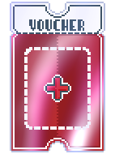
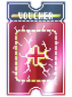
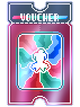
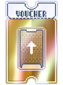
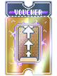
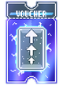
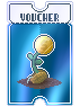
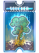
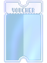
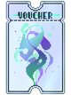
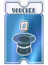
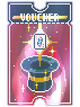
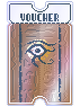
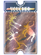

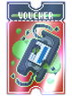
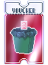
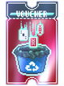
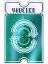
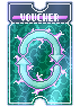
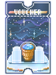
Card Seals are seals that can be added by the Spectral cards Deja Vu, Trance, Medium, and Talisman.
You cannot have more than 1 seal on a card. The seals as mentioned in the Spectral card section are the:
Red Seal: Triggers card an aditional time!
Blue Seal: When held in hand at the end of round, it gives you the Planet card for the last hand played.
Purple Seal: When discarded, it generates a random Tarot card
Gold Seal: When scored, it gives $3 per trigger.
Card Enhancements are well, enhancments to the selected card or joker, but they don't stack.
There are some exceptions though. These enhancements include:
Lucky,
Bonus,
Mult,
Wild,
Glass,
Steel,
Gold,
Stone,
Negative,
Foil,
Holographic,
and Polychrome.
Lucky:
Has a 1/4 chance of giving +20 Mult and a 1/15 chance of giving $20 when scored.
Can only be applied to playing cards.
Bonus:
When scored, gives an additional +30 Chips to your score.
Mult:
When scored, gives +4 Mult to your score.
Wild:
Counts as any suit!
Glass:
Multiplies the mult by x2 and has a 1/4 chance of breaking.
Steel:
When held in hand, multiplies the mult by 1.5.
Gold:
When held in hand, gives $3 at the end of round.
Stone:
Has no suit or rank, gives +50 Chips when scored and always scores when played.
Negative:
Can only be applied to jokers. Negative when applied adds 1 joker slot!
Foil:
When scored or triggered, Foil gives +50 Chips.
Holographic:
When scored or triggered, Holographic gives +10 Mult.
Polychrome:
When scored or triggered, Polychrome multiplies the mult by x1.5.
Foil,
Holographic,
and Polychrome can be applied to jokers and cards and can be applied with other card enhancements.
All of these enhancements are a sure-fire way to turn you into a Balatro pro!